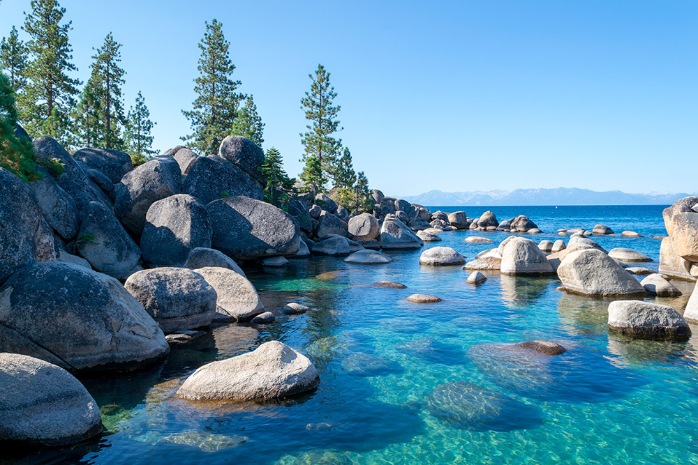
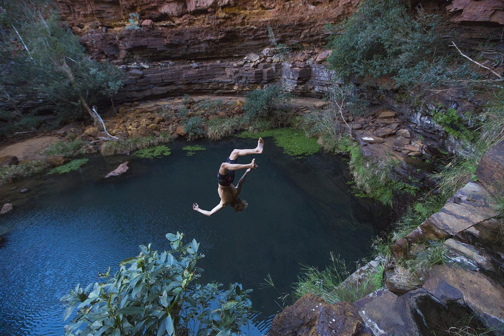

Why Wild Water
The first time I swam in a river rather than a pool I was twenty-three and it was more frightening than I expected. Not because of any particular danger — it was a gentle stretch of the Wye in Herefordshire, shallow and clear — but because of the absence of control. No lane ropes. No tiles to count. No walls to reach. Just water moving somewhere it had decided to go long before I arrived, with no particular opinion about whether I was in it.
That's the difference, and it's bigger than it sounds. Swimming in a pool is exercise. Swimming in a river is an encounter. The pool is predictable by design; the river is predictable only if you've learned how to read it, and even then it keeps reserves. What wild swimming asks of you — attention, humility, some willingness to be uncertain — is the same thing that every worthwhile outdoor activity asks. The water just makes it undeniable.
Reading a River
Before you get in anywhere, you observe. A river tells you most of what you need to know if you look at it correctly. Here is what to look for:
- Flow speed: Watch debris on the surface. Slow movement means safe entry; fast movement requires stronger swimming and clear exit planning.
- Eddies: The still or reverse-flowing water behind rocks and obstacles. These are your rest points, your entry and exit zones. Learn to identify them before you need one.
- Strainers: Submerged objects (logs, branches, fence wire) that water flows through but a body cannot. They are the highest risk feature in rivers. A strainer that pins you underwater is not survivable without immediate assistance. Identify them before entering.
- Temperature: Bring a thermometer for unfamiliar water, especially early season. Below 12°C you will feel cold shock; below 10°C swimming capability degrades quickly. This is not a warning to stay out. It's a warning to know.
- Exit points: Identify at least two before you get in. One upstream of your intended position, one downstream. Water moves faster than you think when you're in it.
Access and Ethics
The legal position on wild swimming varies significantly by country and is frequently misunderstood. In Scotland, the Land Reform Act grants robust public access to most land and inland water for non-motorised activities. In England and Wales, the legal right to swim in rivers is narrower — you have a right of passage on some rivers but not all, and access to river banks often depends on separate landowner permission.
"The river existed before you got there. Swim like a guest."
Legal access and ethical access are related but not identical. Even where you have legal access, the obligations are clear: no littering, no fire, no damage to riverbanks, no washing with soap or chemicals that enter the water. These are minimum standards. Good wild swimming ethics go further: no blocking access for others, respect for fishing rights (many rivers are managed for angling and there are real conflicts), and awareness of the wildlife that uses the same water. Herons, otters, and kingfishers are all more easily disturbed than most people realise.
The Cold
Cold water is the subject of the largest gap between what people expect and what they experience. The expectation, shaped by years of reluctantly entering cold swimming pools, is that it will be unpleasant for a while and then fine. The reality — in water below 15°C — is more interesting than that.
The first thirty seconds of entry into cold wild water trigger a stress response that is genuinely involuntary: sharp inhalation, rapid breathing, elevated heart rate. This is cold shock, and it is normal. It passes. What comes after — roughly ninety seconds of active adjustment — is a feeling that is difficult to describe without sounding evangelical about it. The body, having registered the shock and found no threat, settles. The cold becomes sensation rather than pain. The breathing slows. You become aware of the current against your skin, the temperature of the water at different depths, the light moving through it.
Acclimatisation is real and relatively quick — regular cold water swimming through the year, not just in summer, reduces the shock response and extends the comfortable swimming window. Start in warmer water (above 15°C) and extend into colder conditions as your confidence and technique develop. A 3mm neoprene swim cap has a disproportionate effect on thermal comfort — more heat is lost through the head than any equivalent surface area elsewhere.
Get out before you feel you need to. Mild hypothermia can develop after you leave the water — "afterdrop" as cold blood from extremities recirculates to the core — and it's harder to manage when you're already shivering. Dry and dress quickly. A changing robe is not a luxury item. It is the thing that means you go again next week.
Five Rivers I've Swum, and What Each One Taught
The Wye in July, near Hay-on-Wye, after a dry fortnight: clear to three metres, flowing at a comfortable walking pace, banks of cut grass running down to gravel. This is wild swimming in its most accessible form. I learned here that the reading of a river is not difficult once you start doing it actively rather than passively — the difference between looking at water and looking at water. The gravel bars shift the current toward the far bank. The tree fallen into the left channel creates an eddy you can rest in. The depth changes are visible in the colour of the water if you look for it. You don't need expertise. You need intention.
The Findhorn in April, upstream of Forres: 9°C, moving fast after snowmelt, banks steep and mostly bare birch. I lasted four minutes, which was approximately two minutes longer than felt comfortable. What I learned: speed matters more than temperature in cold rivers. Still water at 9°C is manageable for considerably longer than fast-moving water at the same temperature because the convective heat loss from moving water against skin is orders of magnitude higher. The current doesn't just carry you; it actively takes your heat.
The Dordogne near Beynac in August: 22°C, turquoise, paddleboards and canoes everywhere. Not the most adventurous location but instructive for different reasons. The boat traffic creates hazards that I had not thought about. A canoe has almost no draft and moves quickly and quietly. If you're swimming in a river with tourist boat traffic, swim visibly — tow float, stay close to the bank, make noise if you see something coming. The boat driver cannot see you.

Finding New Spots Without Publishing Them
The wild swimming community has a complicated relationship with publicity. The pools, falls, and rivers that have been written about extensively — the ones in guidebooks and on popular outdoor websites — are often degraded by the volume of visitors that publicity brings. Litter accumulates. Informal paths erode sensitive banks. Wildlife is disturbed. The quality of the experience that prompted the write-up disappears under the weight of everyone who came after it.
I have stopped publishing specific locations, and I'd encourage any writer or blogger who swims to think carefully before doing so. The joy of a wild swimming spot is partially in finding it yourself — following a river upstream until the valley narrows, reading the contour lines on a map to find where a stream drops steeply enough to form a pool. This process is, itself, the activity. A published coordinate robs the next person of it while also risking the place.
The practical method: use 1:25,000 OS maps or equivalent for your region. Look for place names that suggest water — "pool," "llyn," "dubh lochan," "force," "foss." Follow streams uphill on the map to their origin. Check satellite imagery for the pool shapes that suggest depth. Talk to people locally — farmers, fishers, village shop owners — rather than posting in Facebook groups. The information exists in communities, not algorithms. Go find it there.
"The river existed before you got there. Swim like a guest."
— Morgan L.

What We Carried
- Tow float (orange or red, 28L inflatable) — high visibility, doubles as dry bag for phone and keys
- 3mm neoprene swim cap — more thermal protection per gram than any other single piece of cold-water gear
- Neoprene swim socks (3mm) — for entry over sharp rock and extended sessions in water below 12°C
- Goggles (open-water, wide lens) — for river swimming with current; seeing where you're going matters more than in a pool
- Dry bag (5L, roll-top) — separate from tow float; for clothes you want warm when you get out
- Changing robe (microfibre fleece lining) — the single most important piece of kit for swimming in the UK and Northern Europe
- Waterproof thermometer — clip-on or floating; know the temperature before committing
- Waterproof ID pouch — keep with you in the water; if something goes wrong, you want identification on your person
- Emergency space blanket (folded flat) — 85g, takes no meaningful space, essential for cold-water emergencies on remote swims
- Hot drink in insulated flask — the most important piece of post-swim gear; initiates the warm-up from the inside